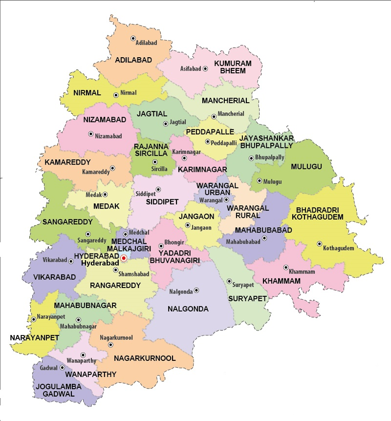

LET'S HAVE A LOOK AT THE TOUR MAP
WHERE TO VISIT , WHAT TO SEE?
SOME HOT PICKS(#HAVE_TO_VISIT)
- KHAJURAHO - STUNNING TEMPLES WITH EROTIC AND SENSUOUS CARVINGS
- BANDHAVGARH NATIONAL PARK
- GWALIOR - BEAUTIFUL MONUMENTS ,PALACES, TEMPLES
- UJJAIN - ONE OF THE HOLIEST CITIES OF INDIA
- BHEDAGHAT - LAKE AMIDST MARBLE ROCKS
- SANCHI STUPA - UNESCO WORLD HERITAGE SITE
- BHOPAL - BEAUTIFUL LAKES
- KANHA NATIONAL PARK
- ORCHHA - INTRICATELY CARVED TEMPLES AND STRIKING FORTS
- INDORE - RICH CULTURAL HERITAGE
- PACHMARHI - QUEEN OF THE SATPURA RANGES
- BHIMBETKA - ROCK SHELTERS ARE AN ARCHEOLOGICAL SITE
- PENCH NATIONAL PARK - INSPIRATION FOR "THE JUNGLE BOOK"
- OMKARESHWAR - HOUSE OF 12 JYOTIRLINGAS SITUATED ON MANDHATA ISLANDS IN RIVER NARMADA
- MAHESHWAR - CAPITAL OF RANI AHILYABAI HOLKAR'S PROVINCE
- JABALPUR - MARBLE ROCK GHATS
- PANNA - PANNA NATIONAL PARK , DIAMOND RESERVES
- MANDU - HISTORIC MONUMENTS WHICH ARE SURELY GOING TO TAKE YOU BACK
- AMARKANTAK - VINDHYA AND SATPURA RANGES
- UDAIGIRI - MOUNTAIN OF SUNRISE ,HOME TO TWENTY ROCK CUT CAVES NEAR VIDISHA, MADHYA PRADESH
- PATALPANI WATERFALLS - LOCATED IN INDORE
- TINCHA FALLS - WHITE WATER CASCADE
- CHORAL DAM - UNWIND AND RELAX OUT OF PELL MELL OF DAILY LIFE
- MOHADI FALLS
- BAMNIYA KUND - WATERFALL FROM 300 FEET ABOVE,POURING DOWN CLEAR BLUE POOL OF WATER
- VIDISHA - UNHEARED RULED PLACE OF MAURYA DYNASTY,KHILJI DYNASTY ,MUGHALS ,GREEKS, AND EVEN THE BRITISH
OTHER_ATTRACTIONS
- BURHANPUR - HISTORICAL TOWN ON THE BANKS OF RIVER TAPTI WITH FEW MARVELLOUS ARCHITECTURES
- SHIVPURI - TRANQUIL AND PEACEFUL DESTINATION
- SATNA - ONE OF THE LARGEST CEMENT PRODUCING CITIES
- CHANDERI - OLD FORTS WITH SCENIC BEAUTY
- BAWANGAJA - JAIN PILGRIMAGE SITE
- HOSHANGABAD - CHARMING TOURIST DESTINATION LOCATED ALONG THE GHATS OF RIVER GANGA
- BHOJPUR - INCOMPLETE HINDU TEMPLE WITH A 7.5 FEET HIGH LINGAM
- MADHAI - QUAINT TOWN
- CHURNA - QUIET VILLAGE
- KUNO-PALPUR WILDLIFE SANCTUARY - HIDDEN GEM OF WILDLIFE AMIDST VINDHYAN HILLS IN MADHYA PRADESH
- DHARAMPURI - QUAINT LITTLE TOWN FILLED WITH HISTORICAL GEMS, EPICS HAVE IT THAT IT WAS ESTABLISHED BY OLDEST PANDAVA - YUDHISTIR
- JANAPAV - IDEAL GATEWAY FOR NATURELOVERS
- HANUWANTIYA - VIBRANT AND COLOURFULL ISLAND
- HATYARI KHOH - UNCANNY AND UNTOUCHED BY INDUSTRIALIZATION, FASCINATING HORROR STORIES
- SITLAMATA FALLS - PICNIC SPOT
- SONAGIRI